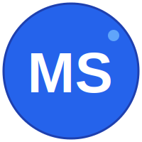
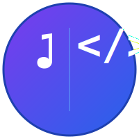

デザイン1
シンプルロゴ風
MSの文字を使った
シンプルで覚えやすいデザイン
デザイン2
ハイブリッド型
音符とコードを融合した
クリエイティブなデザイン
デザイン3
ミーティング＆ソース
社名の意味を視覚化した
親しみやすいデザイン
シンプルロゴ風
MSの文字を使った
シンプルで覚えやすいデザイン
ハイブリッド型
音符とコードを融合した
クリエイティブなデザイン
ミーティング＆ソース
社名の意味を視覚化した
親しみやすいデザイン
| 項目 | デザイン1 シンプルロゴ |
デザイン2 ハイブリッド |
デザイン3 ミーティング＆ソース |
|---|---|---|---|
| コンセプト | 企業名の頭文字「MS」を使ったシンプルで覚えやすいロゴ | 音楽教室と開発の二つの事業を視覚的に融合 | 「Meet(出会い)」と「Source(ソースコード)」を両立 |
| デザインスタイル | ミニマル・モダン | クリエイティブ・バランス型 | 親しみやすい・コミュニティ型 |
| 主要カラー | ブルー系（#2563eb） | パープル→ブルーグラデーション | ブルー系グラデーション＋アクセントゴールド |
| 視認性 | 非常に高い - シンプルで明確 |
高い - 少し複雑だが認識可能 |
高い - アイコン的でわかりやすい |
| ブランド認知 | 「MS」の文字が直接的 |
事業内容は伝わるが企業名は間接的 |
社名の意味を視覚的に表現 |
| 縮小時の視認性 | 小さくても文字が読める |
細かい要素がやや潰れる可能性 |
シンプルな形状で認識可能 |
| 汎用性 | あらゆる用途に使用可能 |
クリエイティブな場面に最適 |
SNSやコミュニティに最適 |
| プロフェッショナル性 | 法人向けに最適 |
クリエイティブで専門性を表現 |
親しみやすさと専門性のバランス |
| 独自性 | シンプルで競合と差別化しにくい |
独特で他と被りにくい |
コンセプトが明確で記憶に残る |
| 最適な用途 | 名刺、公式文書、メール署名 | ポートフォリオ、クリエイティブ案件 | SNS、GitHub、コミュニティサイト |
推奨: デザイン1（シンプルロゴ）
推奨: デザイン2（ハイブリッド）
推奨: デザイン3（ミーティング＆ソース）
| 仕様 | デザイン1 | デザイン2 | デザイン3 |
|---|---|---|---|
| ファイル形式 | SVG（ベクター） | SVG（ベクター） | SVG（ベクター） |
| サイズ | 200×200px | 200×200px | 200×200px |
| 拡大縮小 | 無限に可能（ベクター） | 無限に可能（ベクター） | 無限に可能（ベクター） |
| 背景 | 単色（ブルー） | グラデーション（パープル→ブルー） | 放射状グラデーション（ブルー系） |
| アクセシビリティ | 高コントラスト | 中〜高コントラスト | 高コントラスト |
理由:
ただし、用途に応じて以下のような使い分けも推奨: